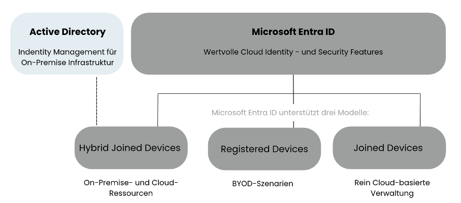
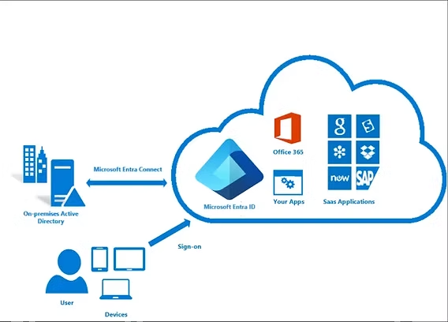

☁️ Intune / Entra ID (Azure AD) / Hybrid
i
Entra ID (frühere "Azure AD") ist quasi das Active Directory für
die Cloud: es verwaltet Benutzer und Geräte nicht mehr aus einem
Serverraum, sondern über das Internet. Intune ist das Werkzeug
dazu, um Geräte (Laptops, Handys) aus der Cloud zu verwalten.
i
Join-Typen, Entra Connect und Conditional Access verstehen – danach ein Szenario-Quiz und Troubleshooting-Tickets aus der Cloud-Identitäts-Welt.
📺 Vertiefung: Was ist Microsoft Entra ID? – Entra Basics 01 (itelio Cloud Uncovered)
Checkliste
Geräte-Join-Typen im Vergleich

| Typ | Eigentümer | Typischer Einsatz |
|---|---|---|
| Entra Joined | Firma | Reine Cloud-Umgebung, kein lokales AD nötig |
| Hybrid Entra Joined | Firma | On-Premises-AD vorhanden, zusätzlich mit Entra ID verbunden (Übergangsphase/Koexistenz) |
| Entra Registered | Privat (BYOD) | Persönliches Gerät, nur für SSO/Zugriff registriert, keine volle Geräteverwaltung |
Entra Connect: Synchronisierungsmethoden

- Password Hash Sync (PHS): Passwort-Hashes werden periodisch (Standard: alle 2 Minuten) ins Entra ID synchronisiert - einfachste Methode, fällt bei On-Prem-Ausfall nicht aus.
- Pass-Through Authentication (PTA): Anmeldungen werden in Echtzeit gegen das On-Premises-AD geprüft, Passwort-Hash verlässt nie die Firma.
- Federation (z.B. ADFS): Authentifizierung läuft komplett über einen eigenen On-Premises-Dienst - am komplexesten, aber maximale Kontrolle.
Intune: Compliance vs. Konfiguration
- Compliance-Richtlinien: prüfen den Gerätezustand (z.B. Verschlüsselung aktiv, OS-Version aktuell) - das Ergebnis ("konform"/"nicht konform") kann Conditional Access als Bedingung nutzen.
- Konfigurationsprofile: setzen aktiv Einstellungen auf dem Gerät (WLAN-Profile, Passwortrichtlinien, Zertifikate).
- App-Schutzrichtlinien (MAM): schützen Firmendaten in Apps, auch auf nicht vollständig verwalteten (z.B. privaten) Geräten.
🔎 Conditional-Access-Szenario-Quiz
Alle Fragen unten beziehen sich auf diese drei Richtlinien:
📱 Gerätemanagement-Quiz
Autopilot, Wipe vs. Retire, MDM vs. MAM (BYOD) und der richtige Umgang mit nicht-konformen Geräten - von leicht bis schwer.
🎫 Troubleshooting-Tickets
Diagnose-Tools anfordern
🖥️ Praxislabor Teil 6: eigener Intune-Tenant, Gerät, Policy & App
i
Bewusst ein NEUES Gerät (CL02) statt CL01: CL01 bleibt klassisch
per GPO verwaltetes Mitglied der on-prem Domäne (siehe vorherige
Labore), CL02 wird komplett cloud-nativ über Intune verwaltet -
ein direkter Kontrast, den viele Firmen heute genau so fahren
(Koexistenz alter und neuer Geräteverwaltung).
i
Eigenständiger Cloud-Teil des Labors - baut NICHT auf SRV01 auf, sondern auf einem separaten Microsoft-365/Entra-ID-Tenant. Zwei Wege, um an einen Tenant zu kommen:
Weg A: CDX (Microsoft Demo eXperiences) - falls verfügbar
Zugang über ein Geschäfts-/Schulkonto mit Zugehörigkeit zum Microsoft-Partner-Netzwerk (z.B. über den Arbeitgeber) - Microsoft- Partner, MVPs und Engineers erhalten darüber vorbefüllte Demo-Tenants.
- CDX cdx.transform.microsoft.com anmelden → "Meine Umgebungen"/"My Environments" → "Tenant erstellen" → Laufzeit wählen (90 Tage oder 1 Jahr).
Weg B: Microsoft 365 Developer Program (öffentlich zugänglich)
Ohne Partner-Zugang: ein kostenloses, verlängerbares Microsoft 365 E5-Entwickler-Abo inkl. Intune - für aktive Entwicklungs-/Lernzwecke gedacht.
- Dev Program Microsoft 365 Developer Program - "Join now", Voraussetzungen prüfen (u.a. Visual-Studio-Abo oder andere qualifizierende Programme).
Schritt für Schritt
- Tenant über Weg A oder B erstellen, im Microsoft Intune Admin Center anmelden und prüfen, dass Intune-Lizenzen zugewiesen sind.
-
Eine neue VM CL02 (Windows 11) anlegen - NICHT CL01
wiederverwenden, da CL01 bereits Mitglied der on-prem Domäne
lab.localist und klassisch verwaltet bleiben soll. - Auf CL02: Einstellungen → Konten → Zugriff auf Geschäfts-, Schul- oder Uni-Konto → Verbinden, mit dem neuen Tenant-Konto anmelden - das Gerät registriert sich automatisch bei Intune (Entra Joined). Anleitung: Microsoft Learn - Windows-Geräte in Intune registrieren
- Konfigurationsprofil (Configuration Policy) anlegen: Geräte → Konfiguration → Neue Richtlinie → Einstellungskatalog, z.B. Sperrbildschirm-Zeitlimit setzen, Zuweisung an "Alle Geräte". Anleitung: Microsoft Learn - Gerätekonfigurationsprofile
-
Win32-App: dieselbe 7-Zip-.msi wie in den vorherigen
Laboren mit dem offiziellen Content-Prep-Tool in ein
.intunewin-Paket verpacken, als Win32-App hochladen (Installationsbefehlmsiexec /i 7z-x64.msi /qn, Erkennungsregel: MSI-Produktcode), Zuweisung Erforderlich. Tool: Microsoft Win32 Content Prep Tool (GitHub) · Anleitung: Microsoft Learn - Win32-Apps zu Intune hinzufügen - Auf CL02 die Unternehmensportal-App öffnen (meist automatisch installiert), mit dem Tenant-Konto anmelden, prüfen dass 7-Zip zur Installation erscheint bzw. bereits installiert wurde. Anleitung: Microsoft Learn - Unternehmensportal-App
- Verifizieren im Intune Admin Center: CL02 taucht unter "Geräte" als verwaltet auf, Konfigurationsprofil-Status "Erfolgreich", App-Installationsstatus "Installiert".
Fortschritt
🖥️ Praxislabor Teil 7 (finalster Schritt): lokales AD hybrid mit Entra ID verbinden
i
Der Clou an diesem letzten Schritt: es werden bewusst NUR
Benutzer und Gruppen synchronisiert, keine Geräte. Damit bleibt
die komplette Geräteverwaltung/Policy-Steuerung bei Intune (wie
in Teil 6) - ein echter Hybrid Azure AD Join (der Geräte
einbeziehen würde) findet gar nicht erst statt.
i
Der Abschluss des gesamten Laborbogens: SRV01 (on-prem
Domänencontroller aus den vorherigen Modulen) wird jetzt mit dem in
Teil 6 erstellten Cloud-Tenant verbunden. Ergebnis: Benutzerkonten
aus lab.local erscheinen automatisch in
Entra ID, das on-prem AD bleibt dabei die "Source of Truth" für
Identitäten - Geräte-/Richtlinienverwaltung läuft komplett getrennt
davon weiter über Intune.
- Auf SRV01 Microsoft Entra Connect herunterladen (aus dem Entra Admin Center des Cloud-Tenants) und installieren. Anleitung: Microsoft Learn - Synchronisierungstool installieren
- Benutzerdefinierte Installation wählen (nicht die Express-Einstellungen) - nur damit lässt sich die Filterung im nächsten Schritt konfigurieren.
- Mit einem globalen Administrator-Konto des Cloud-Tenants anmelden, danach
lab.localals lokales Verzeichnis verbinden. -
Bei der Domänen-/OU-Filterung: NUR die OU(s) mit
Benutzer- und Gruppenobjekten auswählen (z.B. den Standard-Container
"Users") - die OU
Support(enthält das Computerobjekt CL01) und "Domain Controllers" bewusst NICHT auswählen. Das ist der entscheidende Punkt: keine Computerobjekte im Sync-Bereich = kein Hybrid Azure AD Join möglich. Anleitung: Microsoft Learn - Sync-Filterung konfigurieren - Als Sync-Methode Password Hash Sync wählen (siehe Kapitel "Entra Connect: Synchronisierungsmethoden" oben - für ein Labor die einfachste, robusteste Wahl).
- Installation abschliessen, ersten Sync-Zyklus abwarten (Standard alle 30 Minuten) oder auf SRV01 mit
Start-ADSyncSyncCycle -PolicyType Deltamanuell anstossen. -
Verifizieren im Entra Admin Center unter "Benutzer": die
synchronisierten
lab.local-Konten tauchen mit "Lokales Verzeichnis synchronisiert = Ja" auf - unter "Geräte" sollte CL01 dagegen NICHT erscheinen.